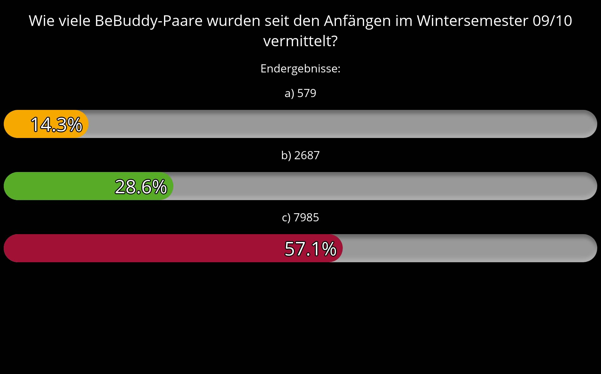
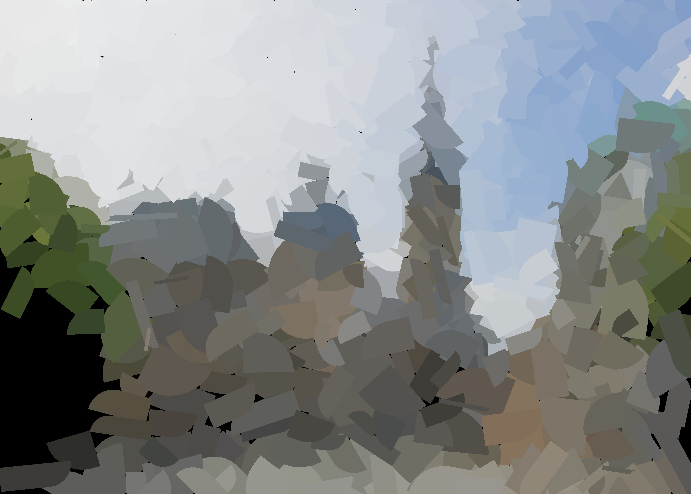

CarpeNecopinum
Computer Graphics, Web and Machine Learning
in Julia, C++, JavaScript, Python, PHP, Kotlin and C#
Project Showcase
Fluxus 2.0 - Surveys

Freundlichificator

© Carpe Necopinum. Website built with
Franklin.jl
.
Project Showcase
© Carpe Necopinum.